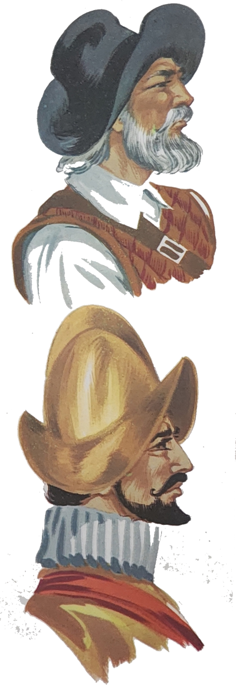
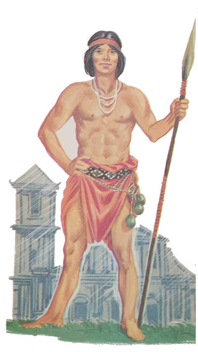
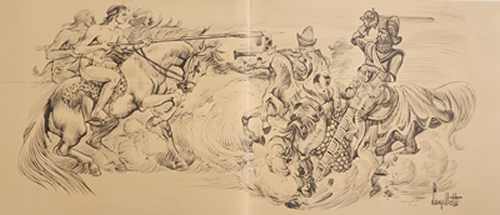

Todos, o Arrelia e a turminha, estavam acomodados em banquinhos característicos do Rio Grande do Sul, com o assento de ripinhas, e Sérgio, muito engenhoso, pensava em fazer um igual quando voltasse para casa. Eram realmente uns banquinhos bonitos, lembrando a forma de um V. Por causa deles o Arrelia começou a comentar sobre as tradições do Estado gaúcho e passou para os importantes acontecimentos que ali tiveram lugar. Falou sobre os heróis que tanto enobreceram a nossa história e mencionou o nome de Sepé Tiaraju. Jaci achou o nome muito interessante.
- É o nome de um chefe índio – esclareceu o Arrelia. Sua vida está envolta em lendas. É uma estória bonita, embora triste, de amor à terra onde vivia. Por certo vocês não leram nada sobre Os Sete Povos das Missões e a Colônia do Sacramento, pois ainda são pequenos.
As crianças confirmaram que nada sabiam e o Arrelia prosseguiu:
- Ficou decidido pelo Tratado de Madri, assinado em 1750, que a Espanha trocaria com Portugal sua possessão conhecida por os Sete Povos das Missões pela Colônia do Sacramento, que pertencia aos portugueses. Milhares de índios guaranis, catequizados e civilizados pelos jesuítas espanhóis habitavam as Missões. Conforme o tratado, todos os habitantes das Missões tinham de deixar suas terras e mudar-se para território pertencente aos espanhóis. Acontece que o prazo para a mudança era muito curto e os índios, que já estavam descontentes, não iam ter tempo de arrumar suas coisas. Os jesuítas interferiram pedindo um prazo maior e aconselharam aos índios que se mantivessem obedientes e tranquilos. Os jesuítas n ao conseguiram mais tempo como pretendiam, porém os índios aparentavam estar conformados. De repente, eles se revoltaram, e isto por causa de Sepé Tiaraju.
Sepé era um índio muito forte e admirado por todos pelas vitórias que sempre conseguia nos jogos que ali realizavam. Sua “namorauda” chamava-se Jussara. Certa manhã ela contou a Sepé que tivera um sonho no qual um anjo lhe dissera que haveria grandes sofrimentos. Um jesuíta, chamado Padre Balda, que ouvira a conversa, procurou acalmá-los e fazê-los esquecer o presságio, mas Sepé ficou triste e preocupado. Logo depois veio a ordem de que falei para abandonarem as terras, e as tropas espanholas e portuguesas encontravam-se por perto a fim de obrigarem os índios a cumprirem as ordens de abandonar suas terras. Padre Balda, que era muito estimado pelos índios, fez de tudo para que eles se retirassem sem reagir, evitando assim que fossem atacados pelas tropas espanholas e portuguesas. O jesuíta dirigiu-se aos índios, procurando convencê-los:
- De nada adiantará reagirmos, meus filhos. Apenas daremos às tropas motivo para atacar-nos. Vamos em paz. Construiremos novas cidades e plantaremos novas lavouras.
Aí Sepé pediu perdão ao jesuíta, mas disse-lhe que pela primeira vez era obrigado a desobedecer-lhe. Não ia permitir que o seu povo entregasse aos portugueses o fruto de tantos anos de trabalho. Dali não sairiam. E prometeu que no dia seguinte, acompanhado de quinhentos homens, atacaria o inimigo. De nada adiantou o esforço do padre para demover o valente guerreiro.
No dia seguinte, logo de madrugada, eles partiram a cavalo, ao encontro do inimigo. Dá-se, logo depois, o combate entre os índios e os soldados portugueses. Foi rápida a luta. De nada adiantaram a coragem e o desprendimento de Sepé e sua gente diante da quantidade e armas do inimigo. Os atacantes foram quase todos exterminados. Os poucos sobreviventes fugiram e Sepé caiu prisioneiro.
Quando Jussara foi avisada, desesperou-se. O padre procurou consolá-la:
- Sei que é Sepé, minha filha. Se caiu prisioneiro, logo se libertará. Não te entristeças que o veremos mais depressa do que pensamos.

No acampamento português, Sepé, feito prisioneiro, era arrastado à presença do general lusitano. Mandaram o bravo índio beijar a mão do general, mas ele recusou-se:
- Ninguém me obriga a beijar a mão de outro homem. Depois, sou eu e não ele o dono das terras que pretendem tomar.
O general português deu risada:
- Dono? Tu és apenas um pobre bárbaro. Mais nada.
Sepé respondeu com os olhos incendiados de raiva:
- Bárbaro? Tu és mais bárbaro do que eu pois pretendes tirar a terra de quem pertence enquanto eu luto em defesa de meu povo. Quem é mais nobre?
Quando o chefe lusitano viu que por mal não ia conseguir conquistar o índio, fingiu-se de amigo e ofereceu-lhe fumo. Sepé recusou-o dizendo que possuía fumo de melhor qualidade do que aquele. O que o português queria mesmo era que o índio revelasse o lugar onde estavam escondidos os cavalos de seus guerreiros para que pudesse apossar-se deles e deixar o inimigo sem meio de ataque. Assim ele disse a Sepé:
- Se me contares onde estão os teus cavalos terás imediatamente a liberdade.
Sepé assumiu um ar de orgulho e respondeu:
- Não preciso esmolar a liberdade. Se eu quiser libertar-me, não há forças aqui capazes de impedir-me.
Os que o ouviram não puderam deixar de caçoar. O general português perguntou-lhe sarcasticamente:
- Então não temos forças capazes de impedir-te a fuga? É muito boa! E o que farias para sair daqui?
Sepé olhou firmemente o lusitano e exclamou:
- Isto!
Rápido como o raio, o índio escapou dos soldados que faziam roda e, montando no primeiro cavalo que encontrou, saiu em disparada. Quando os portugueses perceberam o que havia acontecido, ele já desaparecera numa nuvem de pó.
Assim que chegou às Missões, o povo vibrou de alegria. O entusiasmo se apossou dos índios e dos jesuítas. Padre Balda abraçou-o comovido:
- Eu sabia que voltarias! Tinha certeza! Meu coração não me enganou!
Sepé revelou que agora odiava mais do que nunca o inimigo. A humilhação pela qual passara exigia vingança. O jesuíta percebeu a agitação que dominava ao índio e pediu-lhe que descansasse:
- Umas horas de repouso abrandarão tua revolta. Vai para tua cabana e dorme. Depois teus pensamentos serão outros.
Sepé obedeceu e seguiu para sua cabana. Exausto como estava, o ódio cedeu ao sono e ele adormeceu.

Alguns dias depois, como os índios não haviam deixado as Missões e o prazo esgotara, as tropas portuguesas aguardavam a chegada das tropas espanholas para juntas expulsarem os desobedientes. Foi quando um soldado português entrou alvoroçado em seu acampamento, levando uma seta. Tinha sido atirada por Sepé e trazia espetada na ponta uma mensagem. Nela estava o desafio do índio aos portugueses. Foi mostrada ao chefe lusitano e ele ficou “danaudo” da vida.
- Esse índio era valente mesmo hein? – disse Carlinhos de repente. Acho que era como eu.
A tirada do menino provocou a risada de todos e depois o protesto de jaci:
- Tenha dó! Uma estória tão séria e você vem com essa! Nós sabemos quanto você é corajoso!
- Às vezes ele é, como não? – considerou o Arrelia.
- Às vezes? – espantou-se a menina. Se foi uma vez foi muito?
- Se eu estivesse no lugar dele você ia ver só! – retrucou o menino.
- Qualquer dia talvez você tenha “oportunidade” – terminou o Arrelia e prosseguiu:
- Os portugueses não viam a hora de atacar, mas tinham ordem de aguardar as tropas espanholas. Depois de muita espera veio uma comunicação. Informava que os espanhóis ainda iam demorar algum tempo para se prepararem.
O chefe português ficou por conta, mas não teve outro remédio senão mandar que os seus soldados voltassem à fortaleza onde estavam aquartelados. Quando a notícia chegou às Missões, o povo interpretou a retirada do inimigo como uma derrota e foi uma alegria imensa.

Mais tarde, decorrido aproximadamente um mês, tudo era tranquilidade nas Missões. Os índios e os jesuítas faziam calmamente seus trabalhos. Dia claro e bonito. Tudo era paz entre eles. Foi quando soou um grito que transformou imediatamente o ânimo daquela gente:
- Vamos ser atacados! – bradava um índio ofegante, chegado de longe.
Todos se alvoraçaram. Era o temido ataque dos brancos. E vinham juntos: portugueses e espanhóis. Logo Sepé assume a chefia de sua gente e os guerreiros correm na pressa de se prepararem para a guerra. Em vão os jesuítas pedem que não resistam para evitar a mortandade. Os índios estão por demais revoltados com a maldade dos brancos. Por que queriam tirar-lhes a terra? Que mal haviam feito? Preferiam morrer a sair da terra onde haviam nascido e que adoravam.
Depois de tudo pronto, Sepé despede-se de Jussara e parte com seus guerreiros. Segue na frente, montado a cavalo, na mão direita a lança provocadora; na cabeça, o cocar de plumas multicores. Ele é inteligente e sabe que o inimigo é mais forte. Prefere, pois, a luta de emboscadas, o ataque rápido, pegando o inimigo de surpresa.
Sepé era visto em toda a parte. Desdobrando-se, dava tudo o que possuía de forças para ver o inimigo vencido. Mas o inimigo era poderoso. Lutavam unidos espanhóis e portugueses.
A luta de emboscadas continuou por algum tempo. Por fim, o inimigo resolveu terminar de uma vez com os índios. Os soldados atacaram em massa. Os índios defenderam-se bravamente. As balas dos atacantes, respondem com suas flechas. Caem homens dos dois lados. Depois vem o combate corpo a corpo. Brancos e índios confundem-se no ardor da peleja.
- Coitados dos índios! – exclamou Marisa Penalizada. Por que não deixavam os pobres em paz?
O Arrelia mudou a posição de seu banquinho e respondeu-lhe:
- É o eterno egoísmo dos homens. Os portugueses queriam as terras e não se preocupavam com os sentimentos daquela gente. Não queriam compreender o amor que os índios devotavam ao lugar. Queriam que eles saíssem e pronto.
Mas o combate continuou. Os índios lutavam com um ardor nunca visto. Uma coragem que desprezava as possantes armas do inimigo, deixando-o surpreso. Dentre os combatentes, sobressaía-se a figura de Sepé Tiaraju. O homem era invencível. Lutando como lutava, sem temor, sem a mínima cautela, já era para estar morto. Não se cansava. Seu ânimo era sempre o mesmo.

O inimigo percebe que ele é o coração de seus guerreiros. É a sua presença que os anima. Resolve, portanto, concentrar-se nele. Aos punhados, os soldados atacam e não conseguem vencê-lo.
Agora Sepé é rodeado por dez soldados que procuram feri-lo de todos os lados. Em sua volta a luta prossegue e pouco a pouco os índios vão caindo ante o inimigo muito mais poderoso. O guerreiro enfrenta corajosamente os dez atacantes. Mas é demais. E enquanto lhes dá combate, um deles consegue atingi-lo com a lança. O índio sente-se ferido e tenta resistir. Seus companheiros percebem e ficam horrorizados. Ele agarra-se ao pescoço do cavalo num esforço para não cair. Mas fogem-lhe as forças. Tudo escurece. Seus braços não suportam mais e ele cai ao chão. Está quase morto. Um soldado aproxima-se montado a cavalo e fita o valente guerreiro inerte no chão. Aponta-lhe a arma e atira. Sepé está morto. Deixou de existir o defensor dos povos das Missões.
Quando a noite chega, alguns índios carregam o corpo do chefe para enterrá-lo. Vão tristes, calados, andando lentamente.
Todos os índios que olharam para o céu, viram um cavaleiro galopando um cavalo de fogo, envoltos por uma luz azulada muito bonita. Na mão direita o cavaleiro empunhava a lança. Era Sepé galopando pelo espaço que ia ao encontro de Tupã.
- Bonita estória – exclamou Marisa suspirando. Só não gostei de Sepé haver morrido.
- - Que é “boniuta”, é mesmo – respondeu o Arrelia levantand0-se. De fato ele não devia ter morrido assim. Foi pena.
Mas depois que ele morreu, os índios perderam grande parte da vontade que os fazia enfrentar forças tão superiores. Lutavam ainda, porém sem aquele ardor que sentiam quando Sepé estava presente.
Alguns índios cavaleiros chegam às Missões, trazendo a triste notícia. A desolação apossa-se de todos. O inimigo ferira aquele povo bem no coração. Não tinham mais o seu guia e chefe para dar-lhes coragem.
Jussara, saindo de sua cabana, adivinha pela expressão de sua gente o que acontecera e, desesperada, põe-se a chorar. Padre Balda procura consolá-la, mas a moça não se conforma:
- Por que morreu assim tão estupidamente aquele que lutava por uma causa justa, pelo direito de um povo?

- Tinha de acontecer, minha filha – diz-lhe o padre. Para nós ele não morreu. Jamais esqueceremos sua bravura! Será um exemplo para todos os tempos!
Enquanto isto, no campo de batalha a luta prossegue. Os índios, enfraquecidos, caem um a um. O inimigo, agora com novo ânimo, ataca sem cessar. Já não é mais combate. Trata-se apenas de perseguir os poucos índios que ainda estão de pé. Mais algumas cargas e as tropas espanholas e portuguesas nada mais tem a fazer. Os poucos índios que escaparam fogem para o mato. Nas campinas, entre os corpos dos indígenas, estão inúmeros jesuítas mortos quando tentavam proteger os nativos. Vitoriosas, as tropas marcham para as Missões.
Os jesuítas que se encontram lá procuram reunir o que restou de seu povo para a partida em busca de novas terras. Dizem-lhe palavras encorajadoras. Mas os índios estão todos de cabeça baixa. Sem esperança. A noite vem perto e é preciso partir. Lentamente a processão vai deixando a cidade. Os índios olham com olhos tristes as suas plantações verdejantes, as suas cabanas antigas. Os algodoeiros, à distância, parecem acenar-lhes com lenços brancos, despedindo-se.
Os índios e os jesuítas somem ao longe. A noite chega e cobre a cidade abandonada e silenciosa, tornando-a mais triste. Ninguém acreditaria que ali, pouco tempo antes, vivera um povo alegre e laborioso. Tudo estava terminado.
- E dizer que isso aconteceu aqui – comentou Iberê.
É mesmo! – exclamou Jaci. Parece que estou vendo o combate que o Arrelia contou. Os jesuítas, Jussara chorando . . .
O Arrelia passeou os olhos pelas campinas muito verdes, iluminadas pelo Sol, e falou baixo como se fosse para si próprio:
- Talvez tenha sido messas mesmas campinas. É emocionante pensar nesse povo que amava tão ardorosamente sua terra. É um exemplo que deve ser seguido. Nada merece mais amor e respeito do que a terra onde vivemos.
As crianças admiravam em silêncio o Arrelia. Aí surgiu um grupo de gaúchos. Alegres, falando e rindo, aproximaram-se. Um deles dirigiu-se ao Arrelia e às crianças:
- Vocês parecem tristes hoje. Que é isso? Vamos. Gente! Mais ânimo! Está na hora de tomar chimarrão!
E lá se foram eles atrás dos gaúchos satisfeitos e brincalhões.